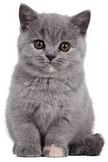

Kediler hakkında merak ettiğiniz bilgiler, türler ve bakım ipuçları.

Yuvarlak yüz hatları ve sakin yapısıyla bilinen popüler bir ev kedisidir.
Farklı göz renkleri ve suyu sevmesiyle ünlü yerel bir türdür.
Kıvrık kulak yapısı ve uysal karakteri ile tanınır.